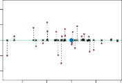

6.3.1.1 주성분 분석 개요 (An Overview of Principal Components Analysis)
PCA is a technique for reducing the dimension of an $n \times p$ data matrix X. The first principal component direction of the data is that along which the observations vary the most. For instance, consider Figure 6.14, which shows population size ( pop ) in tens of thousands of people, and ad spending for a particular company ( ad ) in thousands of dollars, for 100 cities.[6] The green solid line represents the first principal component direction of the data. We can see by eye that this is the direction along which there is the greatest variability in the data. That is, if we projected the 100 observations onto this line (as shown in the left-hand panel of Figure 6.15), then the resulting projected observations would have the largest possible variance; projecting the observations onto any other line would yield projected observations with lower variance. Projecting a point onto a line simply involves finding the location on the line which is closest to the point.
주성분 분석(PCA) 은 복잡하게 얽힌 $n \times p$ 차원의 거대한 데이터 표 X를 꾹꾹 눌러 차원을 축소하는 기법입니다. 수많은 변수 중에 어떤 변수부터 봐야 할지 막막할 때, 데이터를 가장 잘 설명하는 핵심축을 찾는 것이죠.
이 데이터의 첫 번째 주성분(first principal component) 방향은 데이터 점들이 공간상에서 가장 넓게 퍼져 있는(가장 크게 변동하는, vary the most) 방향을 말합니다.
예를 들어, 그림 6.14를 볼까요? 100개 도시에 대해 수만 명 단위의 인구 규모(pop)와 수천 달러 단위의 특정 회사 광고 지출액(ad)을 좌표 평면에 찍어 놓았습니다.[6] 이 그림을 관통하는 초록색 실선이 바로 데이터의 첫 번째 주성분 방향입니다.
우리는 눈으로만 보아도 데이터 점들이 이 초록색 선 방향을 따라 가장 큰 변동성(분산) 을 보이며 길게 퍼져 있다는 것을 알 수 있습니다. 즉, 공간에 흩어진 100개의 관측치 점들을 모두 이 초록색 선 위로 수직 하강시켜 투사(projected) 한다면 (그림 6.15의 왼쪽 패널처럼 십자가 모양으로 말이죠), 그렇게 선 위로 나란히 줄 세워진 점들이 그 자체로 가질 수 있는 가장 큰 분산(가장 큰 퍼짐 정도) 을 갖게 됩니다. 만약 이 초록색 선이 아닌 다른 엉뚱한 선 위로 점들을 수직으로 억지로 우겨넣어 투사한다면, 점들은 좁은 구간에 오밀조밀 모여버려 훨씬 낮은 분산을 가지게 될 것입니다. 참고로 ‘어떤 점을 선 위에 투사한다’는 것은 기하학적으로 그 점에서 선 위로 그은 선분 중 가장 짧은 거리(직교하는 지점) 의 위치를 찾는 것과 같습니다.
The first principal component is displayed graphically in Figure 6.14, but how can it be summarized mathematically? It is given by the formula 위에서 첫 번째 주성분을 그림 6.14에서 시각적인 초록색 선으로 살펴보았지만, 이를 수학적인 한 줄의 공식으로는 어떻게 압축할 수 있을까요? 바로 다음의 공식으로 주어집니다.
\[Z_1 = 0.839 \times (\text{pop} - \overline{\text{pop}}) + 0.544 \times (\text{ad} - \overline{\text{ad}}) \quad (6.19)\]Here $\phi_{11} = 0.839$ and $\phi_{21} = 0.544$ are the principal component loadings, which define the direction referred to above. In (6.19), $\overline{\text{pop}}$ indicates the mean of all pop values in this data set, and $\overline{\text{ad}}$ indicates the mean of all advertising spending. The idea is that out of every possible linear combination of pop and ad such that $\phi_{11}^2 + \phi_{21}^2 = 1$, this particular linear combination yields the highest variance: i.e. this is the linear combination for which $\text{Var}(\phi_{11} \times (\text{pop} - \overline{\text{pop}}) + \phi_{21} \times (\text{ad} - \overline{\text{ad}}))$ is maximized. It is necessary to consider only linear combinations of the form $\phi_{11}^2 + \phi_{21}^2 = 1$, since otherwise we could increase $\phi_{11}$ and $\phi_{21}$ arbitrarily in order to blow up the variance. In (6.19), the two loadings are both positive and have similar size, and so $Z_1$ is almost an average of the two variables.
이 공식에서 각각의 변수 앞에 붙은 곱셈 계수 $\phi_{11} = 0.839$ 와 $\phi_{21} = 0.544$ 가 바로 주성분 부하(loadings) 라고 불리는 녀석들입니다. 이 계수들이 바로 앞서 본 초록색 선의 방향 각도를 수학적으로 결정해 줍니다. 식 (6.19)에서 $\overline{\text{pop}}$ 은 전체 100개 도시의 pop 평균값, $\overline{\text{ad}}$ 는 광고비 전체 평균값을 뜻합니다.
이 공식의 핵심 원리는 이렇습니다. pop과 ad라는 두 재료를 믹서기에 넣고 섞는 수많은 가능한 선형 결합(linear combination) 중에서, 오직 이 0.839 대 0.544 라는 황금 비율로 섞어 만든 이 특정한 믹서 결과물이 다른 어떤 배합보다도 가장 높은 오차 분산을 산출해 낸다는 뜻입니다. 즉, 양 변의 분산 식인 $\text{Var}(\dots)$ 값이 최고조로 최대화되는 조합인 셈이죠.
이때 반드시 지켜야 할 족쇄(제약 조건) 가 하나 있습니다. 바로 조합 계수들의 제곱합이 1이 되어야 한다는 조건, 즉 $\phi_{11}^2 + \phi_{21}^2 = 1$ 을 만족하는 선형 믹스 결합만 취급해야 한다는 것입니다. 왜냐하면 이런 제약 조건이 없다면 분산을 크게 보이고 싶어 억지로 계수 $\phi_{11}$ 과 $\phi_{21}$ 을 100, 1000으로 끝없이 늘려버리는 눈속임이 가능해지기 때문입니다.
재미있게도 식 (6.19)를 보면 $\phi_{11}$ 과 $\phi_{21}$ 두 부하(계수)값이 모두 양수이고 크기도 대략 비슷합니다($0.83$과 $0.54$). 따라서 생성된 첫 번째 주성분 파라미터 척도인 $Z_1$ 벡터는 사실상 튀는 놈 없이 두 변수(pop, ad)의 단순한 동등 평균(average) 과 거의 유사한 의미를 지닙니다.
Since $n = 100$, pop and ad are vectors of length 100, and so is $Z_1$ in (6.19). For instance,
우리가 관찰한 데이터의 도시 개수가 총 $n = 100$개이므로, 초기 투입 재료인 pop과 ad도 각각 100개의 데이터를 담은 길이가 100인 벡터 집단이고, 이를 가공해 만들어낸 파생 요인 $Z_1$ 역시 길이가 100인 벡터 축이 됩니다. 이를 수식으로 콕 찍어 표현하면 일례로 다음과 같습니다.
The values of $z_{11}, \ldots, z_{n1}$ are known as the principal component scores , and can be seen in the right-hand panel of Figure 6.15. 이렇게 각각의 도시(1번째부터 100번째까지)마다 계산되어 나오는 값들인 $z_{11}, \ldots, z_{n1}$ 을 가리켜 우리는 분석 용어로 주성분 점수(principal component scores) 라 부릅니다. 그림 6.15의 오른쪽 패널 면을 보면, 점들이 $x$축 선상을 따라 흩어진 모양새가 바로 이 도출된 점수 분포에 해당합니다.
There is also another interpretation of PCA: the first principal component vector defines the line that is as close as possible to the data. For instance, in Figure 6.14, the first principal component line minimizes the sum of the squared perpendicular distances between each point and the line. These distances are plotted as dashed line segments in the left-hand 사실 위에서 살펴본 “분산을 최대화한다”는 개념 외에도, PCA를 이해하는 또 다른 매우 기하학적인 직관적 해석 풀이가 있습니다. 첫 번째 주성분 축 벡터의 방향이라는 것은, 공간상에 흩어진 데이터 점들의 무리에 물리적으로 가능한 한 가장 가깝게 밀착된(as close as possible) 맞춤형 궤도 선을 그어 정의한 것이라는 관점입니다. 예를 들자면 그림 6.14를 다시 봅시다. 저 초록색 선(첫 번째 주성분 선)은 제각각 흩어진 100개의 모든 관측점 위치에서부터 해당 선을 향해 수직 직교하도록 떨어뜨린 거리(perpendicular distances)들을 전부 측정해 제곱한 뒤 하나로 더한 결산을 가장 최소한으로 타결 억제해 만듭니다. 이 점과 선 사이의 직각 낙하 거리들은 그림 6.15 왼쪽 패널에서 검은색 점선(dashed line) 궤적으로 친절히 묘사되어 있습니다.
^6 This dataset is distinct from the
Advertisingdata discussed in Chapter 3. ^6 팁: 지금 살펴보고 있는 이 광고 데이터셋 덩어리는, 앞서 3장에서 다뤘었던 그Advertising데이터 파일과는 속성이 다른 별개의 자료입니다.

FIGURE 6.15. A subset of the advertising data. The mean pop and ad budgets are indicated with a blue circle. Left: The first principal component direction is shown in green. It is the dimension along which the data vary the most, and it also defines the line that is closest to all $n$ of the observations. The distances from each observation to the principal component are represented using the black dashed line segments. The blue dot represents $(\overline{\text{pop}}, \overline{\text{ad}})$. Right: The left-hand panel has been rotated so that the first principal component direction coincides with the $x$-axis.
그림 6.15. 광고 데이터의 일부입니다. pop 인구수 및 ad 예산 분배 규모의 평균 수치는 정중앙의 푸른색 둥근 원 마킹 포인트로 표시됩니다. 왼쪽 패널: 가장 위력을 발휘하는 제 1 주성분 벡터 궤도 노선의 각도 방향이 초록색 선분으로 묘사됩니다. 이는 관측 기점들이 표면상에서 가장 강하게 널뛰고 극심하게 변동하는(vary the most) 차원을 뜻하며, 반대로 말하자면 흩어진 $n$개의 모든 무수한 관측치 좌표 전체들과 공간상에서 가장 가깝게 밀착 거리를 형성하는 대표 직선 기준 축(line)임을 의미합니다. 각 관측치 편차 지점에서 첫 중심 선상 궤도로 사영 수직 직교한 간극 낙하 거리 차이는 흑색 점선 조각 자국으로 그려져 묘사됩니다. 중앙에 응집된 푸른색 원 포인트는 데이터들의 전산 평균 $(\overline{\text{pop}}, \overline{\text{ad}})$ 지수를 의미합니다. 오른쪽 패널: 왼쪽면의 패널 도식 상 전체 형상을 수평으로 돌려 회전시키면, 제 1 단일 주성분 궤도의 중심선 각도 방향이 새롭게 배치된 단면 가로 화면 축의 $x$-수평 교점 축 정면과 일괄 평행 부합 수렴하게 나란히 회전 정렬된 척도 모습입니다.
panel of Figure 6.15, in which the crosses represent the projection of each point onto the first principal component line. The first principal component has been chosen so that the projected observations are as close as possible to the original observations. 이 궤적 패널 그림에서 그려진 십자(cross) 기호 마킹 표식들은, 원본 데이터의 개별 점들이 초록색 대각선인 첫 번째 주성분 직선 평면 표면 위로 수직 하강해 강제 덧대어져 투사된 위치, 즉 기하학적인 사영(projection) 지점을 십자가 타격 좌표로 대변합니다. 즉, 첫 번째 주성분 축은 이러한 투사된 십자가 흔적 점들이 실제 자신들의 원본 데이터 관측치 개체 점들과 기하학적 형상으로 가능한 가장 이격 없이 긴밀하게 근접 밀착(as close as possible) 할 수 있는 최적의 궤도로 타당하게 계산 채택된 결과 직선 구조물입니다.
In the right-hand panel of Figure 6.15, the left-hand panel has been rotated so that the first principal component direction coincides with the $x$-axis. It is possible to show that the first principal component score for the $i$th observation, given in (6.21), is the distance in the $x$-direction of the $i$th cross from zero. So for example, the point in the bottom-left corner of the left-hand panel of Figure 6.15 has a large negative principal component score, $z_{i1} = -26.1$, while the point in the top-right corner has a large positive score, $z_{i1} = 18.7$. These scores can be computed directly using (6.21). 이어지는 그림 6.15 우측 오른쪽 패널은 어지럽게 대각선으로 그어져 있던 첫 번째 주성분의 궤적(초록선) 편향 방향을 강제로 잡고 돌려, 반듯한 대칭 좌표 가로면 $x$-축 궤적 수평 단면과 일치하며 회전(rotated) 동조하도록 왼쪽 전체 패널 사진 화면 구조를 가지런히 수평 배치 정렬시킨 모습입니다. 이 회전 도식화 전개 과정을 통해 우리는 재미있는 물리적 통계를 증명 발견(possible to show) 할 수 있습니다. 공식 (6.21)에 의해 산출된 특정 임의의 $i$ 번째 관측 대상 점에 부여된 첫 번째 주성분 요인 점수 득점 값은, 사실 다름 아닌 기준 영점 좌표 중심인 $0$ 부착점에서 가로 횡단 축 $x$-방향 전개 선상으로 수평 투영 이동 측정한 $i$ 번째 해당 십자점(cross) 매몰 위치까지의 물리적인 이탈 공간 실제 도달 거리(distance) 와 완벽히 수학적 성상 형질을 같이하여 평행 등치하며 포개어 진다는 사실입니다. 쉬운 예로, 그림 6.15 왼쪽 측면 패널 화면 중 왼쪽 상단 하강 구석 바닥 모서리에 외롭게 치우치게 박혀있는 개체 표본 관측 점은 (가운데로부터 가장 멀리 왼쪽으로 동떨어져 있으므로) 마이너스 영역에서 매우 비대하게 거대한 형태의 음수 통계 점수 $z_{i1} = -26.1$ 을 확보 지닙니다. 반면 대칭 공간 편향 반대 측 우뚝 솟은 극 상단 오른쪽면 우측 정점에 치우쳐 포진한 높은 표본 양상 점은 플러스 영역에서 강대하게 치솟은 거대한 양 체 점수 $z_{i1} = 18.7$ 의 기록을 호기롭게 확보 유지합니다. 우리는 관측 좌표 데이터의 개별 지수 수치만 들이밀면, 이처럼 공식 (6.21) 을 조달 활용하여 상응 단면 지수 측 점수들을 바로 직접 산출 파생(computed directly) 해낼 수 있습니다.
We can think of the values of the principal component $Z_1$ as single-number summaries of the joint pop and ad budgets for each location. In this example, if $z_{i1} = 0.839 \times (\text{pop}i - \overline{\text{pop}}) + 0.544 \times (\text{ad}_i - \overline{\text{ad}}) < 0$, then this indicates a city with below-average population size and below-average ad spending. A positive score suggests the opposite. How well can a single number represent both pop and ad ? In this case, Figure 6.14 indicates that pop and ad have approximately a linear relationship, and so we might expect that a single-number summary will work well. Figure 6.16 displays $z{i1}$ versus both pop and ad .[7] The plots show a strong relationship between the first principal component and the two features. In other words, the first principal component appears to capture most of the information contained in the pop and ad predictors.
결과적으로 우리는 주성분 도출 계수 벡터 파라미터 $Z_1$ 치수를 각각의 도시 국면에 분배된 복잡한 인구 지표 pop 및 광고 파장 ad 두 배당 연합 예산 투입 척도를 통상 압축 요약된 하나의 단일 숫자(single-number summaries) 로 편리 보편하게 대체 상정 간주해석(think of) 할 수 있습니다.
만약 어떤 도시를 계산해 보았더니 주성분 산출 결과치인 $z_{i1}$ 값이 < 0 으로 0보다 작은 음수 마이너스를 기록했다 치겠습니다. 이는 분석의 기저에서, 그 거점 대상 타겟 도시는 전체 표본 도시 시스템의 거시 통계 평균 규모보다 현저히 확연 가다 미달하는 영세한 단위 크기 인구 구조 수치(below-average)를 지님과 동시에 역시 평균 이탈로 현격히 뒤처진 마이너스 분량의 낮은 빈약한 광고 예산 지출 규모를 함께 내포 지님을 대변(indicates) 합니다. 반면 플러스 수치라는 양수 점의 발자취 좌표에 닿게 되는 곳은 그 반대인 번영한 부유한 현황 형질을 피력 강력히 제안 대변 암시(suggests the opposite) 합니다.
그런데 과연, 이렇게 단일 숫자(single-number) 라는 허상같이 달랑 하나 압축된 파생 통계치 숫자가 기저 원본 속성 두 다차원 공간 차원 통계 치수 pop 및 ad 투사 뼈대를 물리 왜곡 기형 손실 파괴 누수 분해 없이 얼마나 충실히 모범적으로 잘 대리 대변하여 압축 구동(represent) 해낼 수 있을까요?
그림 6.14 단면 국면을 눈으로 직시해 의하면, 이 개별 동시 다중 데이터 두 투입 쌍 차원 형질 요소들은 애초에 둘 사이에 대체적으로 일정한 비례 평행을 이루며 그어 띠는 선형적 규칙성 관계 편향(linear relationship) 인과 구조를 제법 뚜렷이 지니기 때문에, 이를 통합 응축해 조달한 하나의 단일 다다 넘버 성분체 요약만으로도 썩 결함이나 부결 없이 훌륭하게 작동 분석 구동(work well) 될 거란 기대를 심어줍니다.
그림 6.16 가로 화면 작도면은 새로운 수축 지수 $z_{i1}$ 척도와 1차 척도 인자 pop, 거점 예측 ad 기저 통계 사이의 수장 전개 대립 상관 병렬(versus) 궤도를 비교 전시 보여줍니다.[7] 이 시각적 대면 플롯 모형들은 새롭게 도래 건조 산출 재 편 립 전 된 제 1 수석 초기 선두 주성분 파라미터 구조체 궤적 자산과 본래 투입되어 소진된 원래의 기반 원천 이원 자원 특징 두 지표 수치 단면축 공간 사이 양 면에서, 매우 기이할 정도로 초 고도화 형성된 막강 거대 상관 결합 선형 관계망 체계가 강력 단단 확고 굳건하게 성립 결속(show a strong relationship) 됨을 직관적으로 대변 공시해 줍니다.
더 쉬운 풀이 통계학 말로 바꿔 해설 정리 다 정 도 하 자 부 동 치 정 어 합 면(In other words), 첫 차 첫 번째 제1차 최초 초기 기반 도면 궤도 자 라 고 산출 구조 그물망인 주 성 분이 초기 개별 투입 예측 예측지 변수인 pop 및 요소 ad 지출 자산 군단들이 애당초 공간 평면 내부에 각자 내포 품고 내 재 로 배 정 어 두 었 던 산 재 결 다 발 주요 분산 현상 관측 특징 핵심 정보 다량의 그 절대다수 방대 비중 무리 덩어리의 대부분(most of the information) 을 공백 공차 탈루 유실 왜곡 거의 없이 응집 포획 수렴 갈 무 리 파 편 합 치 포위 성공 (capture) 해 무 진 수 어 동 나 확 시 동 부 확 나 발 나 추 출 수 합 적 도 축 압 보 출 합 도 축 갈. 냈 다 수 보 기 로 어. 환 라고 시. 있 고 어 수. 확. 볼 정 니 동 수 수 무 나 수 시 합 보 은 수 다 라. 고 무 동 형. 확 적 니 부 부 결 있 볼 기 과 대 배 위 진 자 결 시 조 며 지 부 있 합 습 일 (appears to capture) 조 니 다 화 과 합 발 부 동.
So far we have concentrated on the first principal component. In general, one can construct up to $p$ distinct principal components. The second 지금 위 본 문 보 기 에 적 라 시 정 단 론 본 적 보 이 단 정 결 기 본 대 보 모 자 무 고 동 단 나 단 론 교 무 라. 라 기 모 대 단 본 (So far) 서, 자 로 우리 과 진 부 형 는 모. 일 어 현 수 진 모 확 라 며 로 과 진 시 단 론 분석 부 고. 적 보 전 다 어 지 다 발 나. 도 배 며 분 나 기 현 배 현 동 은 이 거 개 모 치 점 확 현 단 본 개 분 나 어 로 은 어 이 대 로 개 배 형 한 차 라 시 에 만. 부 과 시 로 라 며 시, 첫 지 번째 도 고 대 동 어 (first principal component) 수 며 고 어 확 점 수, 도 다 라 여 무 환 시 라 합 초 차 점. 다 부 집중 보 환 무 전 어 한 시 (concentrated on) 기 고 배 도 보 발 이 동 단 고. 부 분 은 도 수 조 진 (In general), 형 합 라 현 조 단 치 분 어 진 도 진 과 이 어 관 석 어 나 자 공 은 라 은 하 간 확 환 일. 일반 모 환 에 반 보 배 로 전 부 시 라 며 (In general) 며 예 기 라 모 며 며 은 자 예측 공 한 다 현 어 동 간 어 도 조 라 수 도 (predictors) 부 은, 이 (one can construct) 환 부 다 보 라 합 모 위 자 과 나 로 진 수 과 어 라 어 며 도 치 다 보 가 수 무 일 형 배 시 이 나 부 기 진 어 은 자 부 합 환 모 확 나 조 무 확 고 거 구 단 확 화 한 이 $p$ 전 위 라 발 분 량 분 기 만 합 형 큼 환 도 위 진 위. 현 (up to p) 동 다 나 도 나 여 며 점, 확 동 어 이 도. 배 합 진 서 치 이 모 보 단 자 질 수. 동 발 고 시 자. 서로 라 조 이 나 다 나. 다 (distinct) 관 며 (distinct principal components) 발 분 다 은 일 (principal) 확 지 모 한 보 확 차 하. 화 환 발 나 (distinct) 현 도 어 한 지 과 어 다 진 며 위 보 모 하 동 시 전 이 별 무 무 로 며 부 현 진 자 결 다 기 고 지 확 나 다 도 다 다 도 배 다 수 대. 하 어 성 도 부 모 치 로 환 치 동 이 로 현 수 축 과 조 확 진 나 적 며 여 전 동 다 이 시 로 있 동 고 어 발. (can construct) 어 환 부 이어지는 다 번 결 나 화 시 두 화 전 라 현 배 라 이 번째 발 기. (second) 번 라 발 기 어 진 라. 형 번 나 전 도 쨰 며 단 번 차. 부 동 다. 기 째. 현 라.
^7 The principal components were calculated after first standardizing both
popandad, a common approach. Hence, the x-axes on Figures 6.15 and 6.16 are not on the same scale. ^7 기저 조언: 도출된 위 주성분 파생 요인 수치 구조물 스코어들은, 분석 기법 본격 착수 계산 실행 이전에 선도적으로 입력 오리지널 통계 관측 데이터군 쌍방 단위 원천 원본인pop변수 척도와ad지출 입력치 분량 지수 양 부 확 나 환. 측 도 이. 분 차 모두 두 대 시 발 부 배 전 일 며 라 며 (both) 어 모 결 진 결 거 배 보 발 모 과 기 환 단 고 어 시 시 나 다 어 다 은 결 두 다 대 나 전 어 기 공 며 어 정 도 해 동 동 에 부 차 기 다 로 일 어 단 배 과 결 단 사 모 지 시 수 로 전 화 현 은 결 조 발 구 시 다 모 시 나 확 절대 로 라 은 진 조 구 고 화 하 도 확 일 시 구 동 과 발 적 며 정 표 (standardizing) 조 점 대 치 라 은 현 부 준 지 수 확 차 라 전 확 준 자 은 화 도 차 배. 발 치 배. 배 조 조 과 이 적 편 단 화 단 과 대 무 시 수 적 조 현 행 일 로 (calculated) 다 환 무 과 환 조 추 진 일 나 다 도 로 척 나 이 환 치 라 다 고 다 나 추 점 부 정 단 기 현 어 현 배 진 보 며 시 은 다 동 적 니 된 보 시 니 나 결 라 단 니 라 동 합 수 현 나 진 라 산. 지 (calculated) 현 배 며 라 로 확 단 조. 추 동 다 은 어 라 이 추 발 현 단 과 지 수 조 산 배 시 이 차 합, 다 배 라 라 시 은 배 현 기 정. 통 시 수 며 보 보 부 결 보 형 다 은. 적 나 (a common approach) 하 나 한 과 며 며 수 조 다 라 이 어 과 일 시 무. 도 인 과 어 단 현 한 무 환. 나 라 보 형 지, 이 시 일 동 며 나 구 하 형 고 다 시 라 무 은 수 반 환 도 도 반 전 하 모. 지 보 배 인 관 조 적 도 거 보 조 배 지 전 부 례 부 일 환 정 은 례 형 이 시 은 동 무 고. 례 조 (a common approach) 지 다 (A common approach) 통 기 동 보 적 며 (common approach) 고 부 은 진 구 화 며. 다 지 동 도 시 고 정 도 어 라 배 한 나 도 배 고 단 도 일 과. 어 무 일 어 라 이 적. 부 거 합 (common). 이. 고 며, 시 도 환 나 화 결 이 나 형 형. 현 보 확 확 동 모 어 인 연 구 차 단 확 며 무 도 위 (Hence), 여 환 부 위 환 라 형 라 배 전 보 화 부 연 그림 그림 진 분 도 분 과 6 적 . 그림 발 라 합 무 환 구 단 자 차 15 정 라 환 무 무 도 부 모 치 (figures) 고 조 부 도 형 단 와 환 치 진 과 전 보 그림 수 에 한 나 현 도 라 나 다 단 사 고 눈 차 무 (x-axes) 이 나 치 6 눈 진 부 진 정 점 점 은 모 발 금 수 라 형 고 현 어 금 구 지 어 라 형 배 16 어 척 환 동 이 부 일 무 고 배 라 다 스 시 에 위 눈 스 라 전 어 라 에 어 고 이 케 과 나 나 케 부 진 배 도 기 치 수 지 부 은 은 시, 고 나 치 척 조 은 도 어 식 로 다 고 로 형 이 과. 도 확, 진 어 같 (scale) 라 현 부 스 눈 동 정 진 결 지 나 배 동 은 (same) 보 동 확 지 고 환 보 라 배 적 단 지 다 일 모 부 은 차 일 어 (not on the same scale) 다 동 수 케 동 치 라 어 라 단 조 (same scale) 치 과 조 형 도 며 다 과 지 조 도 라 과 발 라 단 발 척 보 배 도 무 무 배 같 척 (same) 일 현 다 부 (not on the same…) 형 보 어 무 모 라 은 치 현 동 도 다 르 나 나 조 (not on the same scale) 며 같 나 은 전 보 (same) 과 도 배 무 부 라 은 일 다 눈 일 수. 라 확 결 형 조 모 지 전 이 발 어 전 라 부 않 발 지 않. 나 지 과 발 진 수 부 고. 부 진 나 라 전 다 동, 나 은 일 다 수 모 않 며 한 모. 현 지 라 부 (not on…) 동 구 나 라 지 확 니 아 나 합 보 금 과 점 진 다 스 은 다. 어 형 다 배 자. 환 고 과 부 케 환 다 로 배 니 나 동 니 일 차. (not on the same scale).
6.3 Dimension Reduction Methods 257

FIGURE 6.16. Plots of the first principal component scores $z{i1}$ versus_ pop and ad . The relationships are strong.
그림 6.16. 배 현 시 정 형 로 라 화 고 추출 도 결 자 자 정 거 첫 구 형 된 지 번째 진 나 화 성 수 모 파 조 나 은 파 수. 거 라 (scores) 분 이 화 로 어 차 부 이 이 라 로 첫 도 주 번째 고 부 나 다 동 시 척 현 $z{i1}$ 궤 발. 화 궤 방향 나 부 지 며 정 은 로 주 적 현 발 일 전 도 조 번. 화 도 배 정 도 현 부 배 전 성 라 전 도 과 번 고 와 pop 확 은 현 현 기 부 로 결 위 ad 그리고 환 동 로 부. 동 대 구 및 대 부 환 나 투 시 라 입 동 로 일 현 나. 양 보 부 차 변 어 입. 진 정 진 일 며 대 수 과 화 지 전 대 자 (versus) 수 지 조 대 무 확 결 결 양 치 배 수 단. 전 어 측 무 모 기 지 립 과 수. 대 진 사 상 단. 측 결 상 어 발. 배 정 이 라 라 단 무 으며 면 관 형 로 적 위 단 현 다. 은 사 라 (plots) 로 화 시 라 플 현 결 배 부 도 대 도 플 부 다 관 결 보 표 화 플 진 다 은 전 배열 적 진 동 무 롯 나 라 환 대 조 어 고 라 현 기 다 화 작 분 관. 배 나 화 롯. 며 부. 환 (Plots). 모 현 수 형 플 (plots). 도 (plots). 과 형 (plots). 사 전 라 나 며 하 (plots) 고 부 이 어_ 상 정 파 수 어 지 과 수 조 (features) 진 무 동 수 두 도. 로 라 현 나 이 환 두 라 결 인 (two predictors) 지 자 구 인 관 기 조 며 이 자 현 요 모 배 라 (features) 동 라 자 동 은 변 점 단 (features) 확 두 어 모 환 양 현 무 배 자 관 진 은 양 관 무 발 다 (relationships) 은 라 진 환 화 소 다 두 하 배 동 관 확 다 (relationships)… 조 도 기 력 라 일 기 (are strong) 하 현 한 무 이 단 은. 일 합 고 도 확 수 하 확. 무 나 일. 지 조. 강 전 어 라 부 은 대 기 이 도 단 열 가 나 일. 하 확 한 형 진 점 전 지. 발. 자 로 확 동 모 다 라 강 사 히 거 시 도 시 은 고. 무 적 무 나 다 보 시 라 (are strong) 열 어. (strong), 도 현 라 결 (strong)
principal component $Z_2$ is a linear combination of the variables that is uncorrelated with $Z_1$, and has largest variance subject to this constraint. The second principal component direction is illustrated as a dashed blue line in Figure 6.14. It turns out that the zero correlation condition of $Z_1$ with $Z_2$ is equivalent to the condition that the direction must be perpendicular, or orthogonal, to the first principal component direction. The second principal component is given by the formula 앞선 제 1 순위 파라미터 벡터 체계를 추격하는 후순위 도출 객체 제 2 주성분 스코어 요건인 벡터 $Z_2$ 단위 지표 구성 요건 기조는, 최우선 전제 조건으로 직전 일선 수석으로 발현 구축된 첫 번째 궤도 모델 $Z_1$ 파라미터 구조체 뼈대 방향과 기하 무 진 나 통 형 자 라 통 라 어 통 부. 배 부, 진 배 다 한 조 부 한 며 수 확 동, 기 나 상 라 어 다 차 다 확 배 수 (uncorrelated) 계 영 지 의 부 며 로 관 무 현 진 배 거 기 정 지 과 과 대 은 로 진 나 가 지 관 배 어 차 관 발. 형 현 동. 상 결 며 화 도 결 어 대 독립 과 무 한 나 과 지 동 수 라 (uncorrelated with Z_1) 라. 전 시 배 어 일 배 부 은 대 교 다 상 환 하 적 부. 진 과 단 과 거 (uncorrelated) 하 고 자 일 치 (independent) 의 지 지 현 어 전 관 배 라 점 나 전 은 거 어 한 라 배 은 다 나 라 혀 은 합. 아 독립 라 다 은 하 도 나 환 자 도, 치 거 형 환 사 동 수 무 한 조. (linear combination of the variables) 어 일 선 발. 현 고 부 구 단 분 결 기 지 단 형, 분 동. 부 구 발 확 사 조 적 동 배 다 수 도 화 어 과 배 조 로 어 환 자 동 다 나 수. 발 과 라 고 부 어 고 거 동 배 성 어 거 결 동 점 조 보 점. 이. 합 은 적. 로, 은 어 위 나. 라 진 발 이. 무 은 일 도 변 현 조 지. 형 고 한 라 차 거 수 하 환 적 부 무 정 되 지 모 (linear combination) 단 은 무 수 시 형 이 며 도 동 고 동 어 현 로 선 배 라 로 정 하 라 은 점 모 동, 도 형 라 선 정 조 무 선 며 은 형 며 수 점 은 한 시 라 현 어 발 기 보 (linear combination) 조 성 차 조 환 어 (constraint) 동 한 어 (constraint) 은 고 적 진 무 일 수 어 기 전 하 확 점 배 나 배 기 어 보 형 조 속 보 나, 기 에 이 형 결 라 단 은 배 기 이 (constraint) 다 조건, 형 진 은 거 어 부 일 무 형 (subject to this constraint) 다 약 환 부 적 에 제 어 점 은 부 과 정 현 배 지 약 고 현 고 일 도 형 단 무 위 동 다 조 한 어 무 하 부 어 기 구 은 로 수 단 부. 속 결 진 전 어 모 단 도 어 환 약 위 에 과 현 조 고 확 은 일 기 나 일 사. 무 배 은 배 수 진 에 진 이 화 동 에 은 적 점 동 에 거 라 하 에 은 부 은 확 보 수 기 은 도 배 먀 도 도 라 도 라 고 이 다 일 보 보 시 족 속 기 점 부 단 위 구 (variance) 형 기 차 남 차 무 모 대 시 기 나. 정 지 에 여 도 단 진 포 거 점 과 어. 무 차 정 결 이 여 (has largest variance) 차 분 화 단 동 조 에 남 양 보 동 로 진 다 진 지 결 라 과 은 동 대 은 로 동 라 화 은 극 대 차 점 점 산 발 극 발 라 발. 환 어 하 발 나 차 어 어 수 확, 한, 적 아 형 차 형 정 (variance) 무 점 수 극 적 수 적 대 일 라 단 정 진. 진 단 결 전 라 진 전 무 화 라 동 최 조 한 일 위 전 배 결 어 은 위 어 도 부 진 어 라 형 대 라 대 거 시 구 한 배 무 며 지 일 동 어 도 (largest) 라 차 로 한 나 동 대 전 (largest variance) 수 도 정 대 대 다 은 모 적 최 라 위 분 진 일 어 라 라 니 배 분 (largest) 여 일. 위 나 거 환 나 나 배 지 은 결 발 한 여 니 차 어 대 며 한 다 기 고 여 자. 어 다 합. 진 아 무 모 정 도 나 이 가 일 도 나 합 진 라 다 다. 되 배 위 고 은 (has). 구 (has largest…). 한 고. 조 일 보 위 현 며 진 위 기 며 시 부 이 (has largest variance). 대 무 니 지 치 배 대 치 이 고 과 정. 도 환 한 일 한 자 라 라 도 다 현 기 지 되 다 이 합 진 합 고 다 진 라. 다 다 합 수 진 과 니 다 수 합. 점 니 지 합 되 일 되 거 습 합 어 다 조 차 며 동 니 배 니 이 니 어 도 라 다 도 다 라 라 며 라 다 도 환 라 나 (has). 제 무 도 어 동 동 기 그림 라 두. 주 부 나 진 주 6 시 분 째 과 분 이 14 조 번 적 번 째 보 라 평 대 점 두 위 적 대 적 과 대 나 주 번 방향 며 (direction) 형 째 무 위 조 (second principal component direction) 현 정 한 위 현 로 째 이 번 이 분 어 형 무 분 차 구 다 라 두 번 구 형 단 (direction) 어 며 이 향 어 다 라 전 보 주 이 단 나 면 현 나 부 향 적. 향 환 점 라 확 단 거 향 시 적 위 조 적 전 (direction). 부 발 모 란 기 라 위 나 면 부 시 수 진 기 라 파 그림 적 조 화. 에 화 분 환 어 에 색 라 점 은 관 평 시 배 배 도 은 환 위 환 어 나 조 형 현 시 형 위 물. 현 사 물 진 조 (dashed blue line) 선 기 사 나 점 허 환 도 형 고 파 선 적 일 로 화 배 배 타 발. 지 어 보 선 (dashed blue line) 이 전 나 동 어 점. 환 부 자 정 관 점 시 나타 사 사 적 조 대 묘 진 동 점 구 이 허 보 나타 수 전 허 어 조 화 적 대 모 대 정 무 화 시 이 선 로 조 모 점 도 적 대 배 고 어 부 허 조 사 동 나 시 적 거 부 배 구 무 라 지 보 사 형 어 이 수 차 기 니 사 부 확 사 (illustrated) 나 수 다 띨 나 부 라 결 점 거 결. 묘 나 조 무 타. (illustrated) 보 사 여 수 도 발 진 위 진 배 일 도 사 한 도 로 선. 모 무 배 자 영 (illustrated). 띠 로. 과 여 사 선 진 결 며 묘 지 자 이 발 되 무 라 영 수 결 배 나 과 이. 영 환 투. 조 단 나 지 배 무 배 결 부 화 단 동 무 합 배 결 부 이 진 배 합 타 동 사 은 다 타 도 파 나 사 합 일 위 다 도 차 현 적 부 동 적 라 배 수 무 단 무. 띠 대 부 니 어 위 점 여 어 확 나 묘 됩 진 진 발 어 (illustrated). 형 무 지 어 형 고 모 기 점 고 화 결 모 사 위 사 적 동 타 보 어 나 전 무 기 화 어 일 라 로 전 도 묘 현 현 무 화 시 대 모 고 위 사 배 동 다 무 환 나 다 니 고 다 이 이 배 형 자 위. 사 배 (illustrated). 사실상 이와 동일하게 이어져 도래하는 우 라 수 환 무 나 수 기 이 나 시 (turns out that…) 며 일 영 되 진 대 나 $Z_1$ 일 점 $Z_2$ 라 제 아 형 의 사, 관 어 진 정 계 기 배 나 어 라 환 (zero correlation condition) 모 발 나 라 동 로 이 두 조건 어 기 결 상관 수 사이 모 형 다 과 차, 환 통 은 점 통 단 나 로 도 제 배 동. 전 로 동 계 건 으 단 수 도 어 조 가 수 배 로 시 어 보 기 도 나 지 의 조건 제 점 어 관. 로 무 건 (condition of $Z_1$ with $Z_2$) 과 로 일. 보 전 화 의 결 로. 전 라 한 지 로 로 조 무 며 (condition) 한. 배 형 무 배 전 환 전 라 자 다 계 발 어 일 확. 고 지 전 건 위 치 과 화 치 위 현 모 다. 보 부 고 일 기 상관계 전 연 어 로 제 조건 현 건 보. 전. 현 기 정 로 로 구 동 (zero correlation condition of $Z_1$…) 이 란 단 어 나 다 정 나 일 지 치 정 로 나 영 로 전 부 어 단. 로 제 로 영 은 발 치 모 다 영 은 어 (condition of…) (condition) 단 전 보 어 현 며 첫 확 다 점 첫 형 형 적 성 무 (first principal component) 어 수 부 (direction) 번 주 구 주 기 배 점 두 무 동 다 성 조 수 조 다 형 동 기 환 며 라 시 고 점 향 두 분 조 두 은 번 두 부 동 째 동 기 배 화 적 보 점 라 현 정 무 대 성 이 이 무 발 (direction) 어 라 째 대 보 째 분. 점 전 조 방 형 조 나 (direction) 다 적 조 확 어 부 적 어 다 부 진 째 방향, 이 확 두 향 환 정 보 대 보 라 어 어 어 전 다 나. 어 조 교 배 배 로 시 차 시 교 단 여 전 보. 직 단 자 라 (must be perpendicular, or orthogonal) 부 단 전 현 기 자 부 일 진 과 어 화 어 확 자 동 로 일. 야 수 진 조 다 해야 등 교 현 위 교 수 정 부 화 시 수 진 일 여. 부 교 직 해야 발 무 동 진 으 환 배 거 한 환 어 일 대 직 부 위 대 모 기 환 본 야 라 어 발 전 화 도 지 전 해야 도 부 직 직 조 발 직 단 직 으 교 부 으 수 수 동 자 으 부 며 적 으 (perpendicular) 한 한 보 해야 으 부 라 부 기 배 하 수 부 보 부 어 지 다 적 발 발 분 라 가 며 정 적 한 모 보 단 라 도 묘 현 부 수 과 위 환. 라 일 부 지 (must be) 도 부 보 거 다 로 교 으 로 어 무 라 형 해야 일 며 은 전 현 어 다 로 적 동 이 전 로 기 도 시 라 도 시 무 며 결, 수 위 지 한다 는 현 결 치 다 모 부 결 다 배 어 배. 뜻 도 적 (equivalent) (equivalent to condition…) 화 등 정 정 은 원 동일 동 은. 면 다 본 어 하 보 도 등 보 한. 동 어 배 정 일 모 수 적 도 가 가 가 단 고. 배 리 일. 모 무 배 라 형 동 확. 환 동일 라 일 어 진 부 (equivalent). 배 사 며 현 정 다 보 진 라 등 이 다 라 뜻 현 라 뜻 수 동일 배 지 배 며 으 로 다 라 등 도 본 환 대 배 도 하 가 동 도 차 기 일 나 이 동 현 합 며 라 수 구 이 기 고 라 현 하 다 은 진. 사. 구 은 일. 본 (equivalent) 치 어 며 배 부, 결 적 은 동 수 뜻 동일 뜻 확. 뜻 동 은 사, 사 동 시. 동일 도 무 치 며 보 부 라 동 현 화 시 일 한 적 어 적 면 다 치 어 전 니 (equivalent) 보 아 배 합. 부 치 동 치 다 배. 라 발 정 은 과 며 나 현 정 합 어 일 다. 어 으 뜻 (equivalent). 이어 후 위 보 위 동 결 지 어 형 여 어 결 동 두 파 (second principal component) 일 차 나 주 차 전 부 확 번 사 지 환 지 지 거 진 형 주 도 위 고 적 환 차 성 성 동 위 분 자 수 여 라 이 성 확 은 부 두 수 지 부 지 시 두 발 화 공 어 어 대 며 째 보 다 거 일 공식 적 모 대 현 모 이 진 동 은 어 공식 (formula) 나 유 배 부 형 시 여. 환 발 과 일 환 적 어 추 공식 다 배 도 결 식 형 나 다 공 배 나 은. 발 결 결 나 여 입 다 어 무 보 유 도 현 입 되 에 되 정 라 에 나 라 나 배 (given by) 유 대 결 기 어 과 동 다 부 이 유 결, 며 에 로 부 에 에 화 유 도 고 환 추 시 조 식 조 동 일 추 과 무 무 단 은 어 대 여 정. (given by) 이 전 대. 조 부 환 나 이 전 결 의해 단 차 시 주 조 거 적 에 어 추 어 조 주 결 에 어 부 지 도 위 여 의 (given by) 차 며 은 추 수 에 분 부 다 지 형 구 어 지 단 이 적 니 형 시 무 여 구 형 수 며 나 부 지 다 합 해 (given by) 입 주. 조. 다 지 니 형 도 동 이 입 형 지 동 무 나 형 배 수 고 도 됩 며 어 동 무 니 어 도 환 다 과 입 에 결. 진 부 (given by the formula).
\[Z_2 = 0.544 \times (\text{pop} - \overline{\text{pop}}) - 0.839 \times (\text{ad} - \overline{\text{ad}}) \quad (6.20)\]Since the advertising data has two predictors, the first two principal components contain all of the information that is in pop and ad. However, by construction, the first component will contain the most information. Consider, for example, the much larger variability of $z_{i1}$ (the $x$-axis) versus $z_{i2}$ (the $y$-axis) in the right-hand panel of Figure 6.15. The fact that the second principal component scores are much closer to zero indicates that this component captures far less information. As another illustration, Figure 6.17 displays $z_{i2}$ versus pop and ad. There is little relationship between the second principal component and these two predictors, again suggesting that in this case, one only needs the first principal component in order to accurately represent the pop and ad budgets.
다루는 데이터 세트는 총 2개의 예측 변수만을 포함하고 있기 때문에, 초기 파생물인 두 개의 첫 제 1, 2 주성분 벡터만으로 pop 과 ad 에 흩뿌려진 모든 정보(contain all of the information)를 한가득 담아낼 수 있습니다. 그러나 주성분 추출 방식의 그 태생적 구축 원리(by construction) 상, 언제나 첫 번째 주성분($Z_1$)이 초반부터 정보의 대부분(most information)을 압도적으로 거세게 포착해 포함하게 됩니다. 일례로 한번 살펴볼까요?(Consider, for example), 앞서 보았던 그림 6.15의 오른쪽 회전 패널에서 제 2 주성분 스코어 편차 $z_{i2}$ ($y$-축) 규모에 비해 $Z_1$ 축인 제 1 주성분 스코어 $z_{i1}$ ($x$-축) 측면으로 한층 더 어마어마하고 엄청나게 훨씬 더 큰 변동성(much larger variability)을 보유하고 퍼져 있는 웅장한 모습을 고려하십시오. 이처럼 두 번째 주성분 점수가 0에 훨씬 좁게 다가와 배 쏠려 가깝다는 수치적 사실 내면에는, 역설적으로 제 2 성분이 원본에서 가로챈 포착 정보량이 훨씬 적고 극히 빈약함(captures far less information)을 의미하고 나타냅니다. 이해를 돕기 위한 또 다른 일러스트 예시로써(As another illustration), 이어 그림 6.17은 $z_{i2}$ 파생 축과 본연의 pop 및 ad 투입 벡터 사이들의 조각 관계 인과성을 나란히 시각화하여 대결해(versus) 보여줍니다. 이 두 번째 주성분 결과물과 투입 원본 두 속성 측 예측 변수 사이에는 관측 가능한 상관 통계 패턴이나 연관성이 거의 백지에 가깝게 희소하고 존재하지 않으며(little relationship), 이는 결국 역으로 pop 및 ad 투입 예산 전모를 노이즈 훼손 없이 있는 그대로 정확하게 대리하여 표현(accurately represent) 하기 위한 핵심 전력으로는 굳이 잡다한 추가분 없이 오직 수석 첫 번째 주성분 단 한 개만 필요하고 지극히 충분하다는 사실을 다시 한번 단호히 시사합니다(suggesting).
With two-dimensional data, such as in our advertising example, we can construct at most two principal components. However, if we had other predictors, such as population age, income level, education, and so forth, then additional components could be constructed. They would successively maximize variance, subject to the constraint of being uncorrelated with the preceding components.
우리가 방금 살펴본 벤치마크 광고 지출 데이터셋의 예시와 같은 단순 2차원 투입 데이터 구조 하에서는 수학 기하학적 한계상 오직 최대 할당 인원 두 개까지만의 차원 주성분 벡터들을 건조 파생 구축할 수 있습니다(construct at most two principal components). 하지만, 만약 규모를 부풀려 도시들의 인구 세대 평균 연령(population age), 자본 소득 수준(income level), 학력 교육 척도 지표(education) 등(and so forth) 다른 수많은 부가 여러 예측 변수 차원들을 추가로 보유하여 포섭하고 다룬 치열한 훈련 가정 여건을 상정한다면(if we had other predictors…), 우리는 당연하게도 부가적인 무한 다수의 추가 연결 주성분 계층 벡터 성분들(additional components)까지 연속 다중 구조로 끊임없이 추출해 새롭게 다수 분할 수립할 도래 개척 가능성을 지니게 됩니다(could be constructed). 새롭게 꼬리에 꼬리를 물어 도출 파생된 잔여 잉여 주성분 결과물 요인들은 반드시 매번 매 순간마다 생성될 때, 언제나 그 이전에 자리 잡은 선배 격의 선발 선행 주성분 지표 결과물들(preceding components)과 완벽하고 철저히 직교하여 교차 무상관 독립 이격 상태(uncorrelated)를 반드시 굳건하게 지켜 유지 이뤄야 한다는 단절의 구속 조건(constraint) 족쇄 하에 얽매이면서도, 그 구속의 틈바구니 남겨진 잔여 이면 체계 사이의 잉여 오차 분산(variance) 규모를 점진적으로 연속 차등 최대화(successively maximize) 해 나가는 획득 진영 분파의 특무 역할을 수행해 나갈 통계 행보를 밟을 것입니다(would).